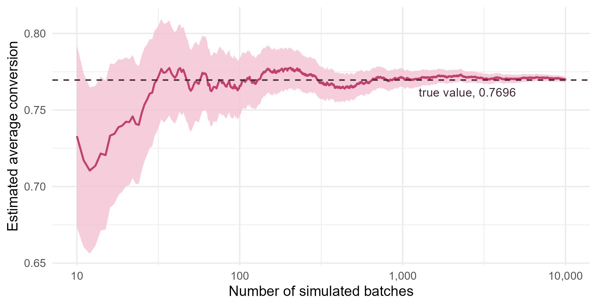

Module 4 · Lesson 5 of 14 Week 65 of 160 About 5–7 hours
Monte Carlo integration
Integrals by simulation, and how to make them more precise
Estimate integrals and expectations by averaging random draws: the expected conversion of a batch reactor whose rate constant varies, with its Monte Carlo standard error. Then estimate a one-in-a-million relief-valve risk with importance sampling, and make estimates more precise for free with antithetic and control variates.
A batch reactor runs a first-order reaction for 30 minutes, so its conversion is
X = 1 - e^{-kt}, \qquad t = 30 \text{ min}.
If every batch had the same rate constant, k = 0.05 per minute, every batch would reach X = 0.777. But the catalyst’s activity varies from batch to batch, and so does k: from the plant’s records, it’s lognormal, with a median of 0.05 per minute and a sdlog of 0.3. Dana wants to know the average conversion, to plan the downstream separation. That’s an expected value, which is an integral:
E[X] = \int_0^\infty \left(1 - e^{-30k}\right) f(k)\, dk,
with f the lognormal density. There’s no formula for it. You could use numerical integration, but there’s a simpler and more general way: simulate many batches, and average their conversions. That’s Monte Carlo integration, named after the casino, and it’s the workhorse of modern statistical computing.
Rolling the dice to compute an integral? It sounds like cheating, but it’s one of the most powerful ideas in science. The trick is knowing how much to trust the dice!
In this lesson you’ll:
- estimate integrals and expected values by averaging random draws
- measure the precision of the estimate with its Monte Carlo standard error
- see why the average conversion isn’t the conversion at the average rate
- estimate a rare-event probability with importance sampling
- make estimates more precise with antithetic variates and control variates
Integrals as averages
The idea fits in one line. If X_1, \dots, X_n are independent draws from the density f, the law of large numbers says that
\frac{1}{n} \sum_{i=1}^n h(X_i) \;\longrightarrow\; E[h(X)] = \int h(x)\, f(x)\, dx .
So any integral that you can write as an expectation, you can estimate by an average. Even an ordinary integral over (0, 1) is one: \int_0^1 h(x)\,dx = E[h(U)] with U uniform, because the uniform density is 1 on (0, 1).
Your turn. The integral \int_0^1 e^{-x^2}\,dx has no formula (it’s related to the normal CDF). Estimate it from 10,000 uniform draws, and compare with R’s numerical integration, integrate().
The integrand is e^{-x^2}: exp(-u^2).
integrate(function(x) exp(-x^2), 0, 1)$value # numerical integration, to compare
set.seed(4051)
u <- runif(10000)
mean(exp(-u^2))0.7458, against the true value 0.7468. Close, but only to about two and a half digits. For a one-dimensional integral like this, integrate() is far more accurate. Monte Carlo wins in many dimensions, where grids of points become impossibly large, and for expectations over complicated random processes, where there’s nothing to integrate on a grid.
The average conversion
Now Dana’s question. Simulate the rate constants of many batches, compute each batch’s conversion, and average.
Your turn. Estimate the expected conversion after 30 minutes from 10,000 simulated batches, and compare it with the conversion of a batch that has the average rate constant.
The reaction time is 30 minutes.
set.seed(4052)
k <- rlnorm(10000, log(0.05), 0.3) # rate constants of 10,000 batches, per minute
X <- 1 - exp(-k * 30) # each batch's conversion after 30 minutes
c(mean_conversion = mean(X), at_mean_k = 1 - exp(-mean(k) * 30))The average batch converts 77.0%. But a batch with the average rate constant would convert 79.2%: plugging the average input into the formula overestimates the average output by over 2 percentage points. The reason is that the conversion is a concave function of k: it flattens out as k grows. A fast batch gains less than a slow batch loses, so the variation in k costs conversion on average. That’s Jensen’s inequality, and it’s why engineers simulate their uncertainty instead of plugging in averages.
How precise is it?
A Monte Carlo estimate is a sample mean, so it has a standard error like any other: the Monte Carlo standard error (MCSE),
\text{MCSE} = \frac{s_h}{\sqrt{n}},
where s_h is the standard deviation of the h(X_i), here the conversions. By the central limit theorem, the estimate \pm\, 1.96 \times \text{MCSE} is a 95% confidence interval for the true integral. The \sqrt{n} is the catch: to get one more decimal digit, 10 times more precision, you need 100 times more draws. Here’s the estimate of the average conversion as the simulation runs, with its 95% band:
set.seed(4052)
k <- rlnorm(10000, log(0.05), 0.3)
X <- 1 - exp(-k * 30)
n <- seq_along(X)
running <- data.frame(n = n, estimate = cumsum(X) / n, se = sd(X) / sqrt(n))[n >= 10, ]
ggplot(running, aes(x = n, y = estimate)) +
geom_ribbon(aes(ymin = estimate - 1.96 * se, ymax = estimate + 1.96 * se), fill = "#F4C0D1", alpha = 0.8) +
geom_line(color = "#C2416C", linewidth = 0.8) +
geom_hline(yintercept = 0.76957339, color = "#3A1F35", linetype = "dashed") +
annotate("text", x = 2500, y = 0.7615, label = "true value, 0.7696", hjust = 0.5, size = 3.6, color = "#3A1F35") +
scale_x_log10(breaks = c(10, 100, 1000, 10000), labels = c("10", "100", "1,000", "10,000")) +
labs(x = "Number of simulated batches", y = "Estimated average conversion") +
theme_minimal(base_size = 12)
Your turn. Compute the MCSE of the average conversion, and a 95% interval for it.
Divide by the square root of the number of draws, length(X).
set.seed(4052)
k <- rlnorm(10000, log(0.05), 0.3)
X <- 1 - exp(-k * 30)
mcse <- sd(X) / sqrt(length(X))
c(estimate = mean(X), mcse = mcse, lower = mean(X) - 1.96 * mcse, upper = mean(X) + 1.96 * mcse)An MCSE of 0.001, so the average conversion is between 76.8% and 77.2%. The true value, 76.96% (from careful numerical integration), is inside. For a precision of ±0.05 percentage points, you’d need about 140,000 batches. That’s still quick, but later in this lesson you’ll get there with far fewer.
Rare events: importance sampling
The reactor’s peak pressure during a batch is normal, with a mean of 8.0 bar and an SD of 0.4 bar. Its relief valve opens at 9.8 bar, 4.5 standard deviations above the mean. The safety review needs the probability that a batch lifts the valve:
P(Z > 4.5) = \int_{4.5}^{\infty} \phi(z)\, dz = E\big[\mathbf{1}(Z > 4.5)\big],
where \phi is the standard normal density and \mathbf{1}(\cdot) is 1 when the condition holds and 0 otherwise. Here, pnorm() knows the answer, 3.4 \times 10^{-6}, so we can check our methods. In a real safety study, the peak pressure would come from a simulation of the whole reactor, and there would be no formula.
Plain Monte Carlo is hopeless for rare events. With 100,000 simulated batches, you’d expect a third of one to exceed 4.5. Almost all your draws land where nothing happens.
Importance sampling draws from a different density g that puts more draws where it matters, and corrects with weights:
E_f[h(X)] = \int h(x)\, \frac{f(x)}{g(x)}\, g(x)\, dx = E_g\!\left[h(X)\, w(X)\right], \qquad w(x) = \frac{f(x)}{g(x)}.
So draw from g, and average h(x)\,w(x). Here, a good g is a normal centered at the threshold, N(4.5, 1): half its draws exceed 4.5, and each one is weighted down by \phi(x)/\phi(x - 4.5), the ratio of the two densities.
Your turn. Compare plain Monte Carlo with importance sampling, 100,000 draws each.
Center the proposals at the threshold: mean = 4.5.
pnorm(4.5, lower.tail = FALSE) # the true value, to compare
set.seed(4053)
z <- rnorm(1e5)
mean(z > 4.5) # plain Monte Carlo
y <- rnorm(1e5, mean = 4.5) # draws centered on the rare event
w <- dnorm(y) / dnorm(y, mean = 4.5) # importance weights f / g
mean((y > 4.5) * w) # importance samplingPlain Monte Carlo found exactly one batch above 4.5, so it estimates 10^{-5}: three times too high, and with another seed it would just as likely say 0. Importance sampling gives 3.3995 \times 10^{-6}, within 0.05% of the truth, from the same number of draws. Its MCSE is 0.7% of the estimate. For the safety review: with 2,000 batches a year, the valve should lift about once every 150 years.
NoteGo deeper: choosing g
The variance of the importance sampling estimate is small when h(x)\,f(x)/g(x) is nearly constant wherever g puts its draws. The ideal g is proportional to |h(x)|\,f(x), but you’d need the answer to normalize it. Good proposals imitate it: here, the normal density beyond 4.5, which an exponential tail starting at 4.5 copies closely (Challenge 2). Two rules of thumb: g must never be zero where h f isn’t, and g’s tails should be at least as heavy as f’s. If g has lighter tails, a rare draw far out gets a huge weight, and the estimate’s variance can be infinite.
Antithetic variates
Monte Carlo estimates get more precise with more draws. They also get more precise with better draws. The rate constant came from a uniform number, through the lognormal quantile function: k = F^{-1}(U). A small U gives a slow batch, and a large U a fast one. Antithetic variates pair each U with its mirror image 1 - U: each pair contains one slow and one fast batch, so their average conversion is close to the overall average. The pairs’ errors partly cancel.
Your turn. Make 5,000 antithetic pairs, and compare the variance of their estimate with the variance of plain Monte Carlo with the same number of conversions, 10,000.
The antithetic partner of u is 1 - u.
set.seed(4054)
u <- runif(5000)
X1 <- 1 - exp(-30 * qlnorm(u, log(0.05), 0.3))
X2 <- 1 - exp(-30 * qlnorm(1 - u, log(0.05), 0.3)) # the mirror-image batches
pairs <- (X1 + X2) / 2
c(estimate = mean(pairs), var_plain = var(X1) / 10000, var_antithetic = var(pairs) / 5000)The estimate is 0.7696, almost exactly the true 0.76957, and its variance is 47 times smaller than plain Monte Carlo’s with the same 10,000 conversions. To match it, plain Monte Carlo would need 470,000 draws. The two halves of each pair have a correlation of −0.98. Antithetic variates help whenever the result rises or falls steadily with the uniform number, as it does here.
Control variates
Another trick uses something you already know. The conversion X is strongly correlated with k, and the mean of k is known exactly: for a lognormal, E[k] = e^{\mu + \sigma^2/2} = 0.0523. If a simulation’s \bar{k} comes out above 0.0523, its batches were faster than average, so its \bar{X} is probably too high too. The control variate estimate corrects for that:
\hat\theta_{\text{cv}} = \bar{X} - b\,\big(\bar{k} - E[k]\big),
with b the slope of X on k, b = \operatorname{cov}(X, k)/\operatorname{var}(k). Its variance is smaller by a factor of 1/(1 - \rho^2), where \rho is the correlation between X and k.
Your turn. Compute the control variate estimate.
Subtract the known mean, Ek.
set.seed(4055)
k <- rlnorm(10000, log(0.05), 0.3)
X <- 1 - exp(-30 * k)
Ek <- exp(log(0.05) + 0.3^2 / 2) # the known mean of k
b <- cov(X, k) / var(k)
X_cv <- X - b * (k - Ek)
c(plain = mean(X), control = mean(X_cv), var_ratio = var(X) / var(X_cv))The plain estimate is 0.7701, and the control variate estimate 0.7695, closer to the truth, with a variance 10 times smaller. The correlation between X and k is 0.95, and 1/(1 - 0.95^2) = 10.3. Here, the antithetic pairs did even better, but control variates work in situations where antithetic pairs can’t, as long as you know the exact mean of something correlated with the result.
Challenge round
Challenge 1 · In specification on both counts. A batch’s purity is normal with mean 99.1% and SD 0.3%, and its water is normal with mean 150 ppm and SD 25 ppm, with a correlation of −0.6 (wet batches are less pure). A batch is in specification if its purity is at least 98.6% and its water is at most 200 ppm. That’s a two-dimensional integral. Estimate it by simulation, building the correlated pair from two independent normals as in Lesson 4, and compare with mvtnorm::pmvnorm(), which computes such probabilities numerically.
The water limit is 200 ppm.
set.seed(4056)
z1 <- rnorm(20000)
z2 <- rnorm(20000)
purity <- 99.1 + 0.3 * z1
water <- 150 + 25 * (-0.6 * z1 + sqrt(1 - 0.6^2) * z2) # correlation -0.6 with purity
S <- matrix(c(0.3^2, -0.6 * 0.3 * 25, -0.6 * 0.3 * 25, 25^2), 2)
as.numeric(mvtnorm::pmvnorm(lower = c(98.6, -Inf), upper = c(Inf, 200), mean = c(99.1, 150), sigma = S))
mean(purity >= 98.6 & water <= 200)93.7% by simulation, and 93.8% numerically. If purity and water were independent, the answer would be 0.952 \times 0.977 = 93.1\%. The negative correlation helps a little: the batches that fail on water tend to be the ones that fail on purity too, so the failures overlap. In ten dimensions, numerical integration struggles, and simulation works just as well as here.
Challenge 2 · A better proposal. The Go deeper box says that the best proposal imitates the target beyond 4.5. The normal tail beyond 4.5 looks very much like an exponential distribution starting at 4.5, with rate 4.5. Use it as the proposal, and compare the relative MCSE (the MCSE divided by the estimate) with the 0.7% of the shifted normal.
The proposal’s rate is 4.5.
set.seed(4057)
y <- 4.5 + rexp(1e5, rate = 4.5) # every draw is beyond 4.5
w <- dnorm(y) / dexp(y - 4.5, rate = 4.5)
c(estimate = mean(w), relative_mcse = sd(w) / sqrt(1e5) / mean(w))3.3967 \times 10^{-6}, with a relative MCSE of 0.027%, which is 26 times smaller than the shifted normal’s, so it’s worth about 700 times as many draws. Every draw lands in the region that matters, and the weights hardly vary, because the proposal is shaped almost exactly like the target. (There’s no need for (y > 4.5) here: it’s always true.)
Quick quiz
1. How does Monte Carlo estimate \int h(x) f(x)\,dx, where f is a density?
The law of large numbers makes the average converge to the expectation.
2. A Monte Carlo estimate has an MCSE of 0.004 with 10,000 draws. How many draws would give an MCSE of 0.001?
The MCSE shrinks like 1/\sqrt{n}: four times smaller needs 16 times the draws.
3. The conversion of the batch with the average rate constant is 79.2%, but the average conversion is 77.0%. Why?
Jensen’s inequality: for a concave function, the average of the outputs is below the output at the average.
4. Why does plain Monte Carlo struggle with a probability of 10^{-6}?
Its relative error is about 1/\sqrt{np}, which needs n in the hundreds of millions for p = 10^{-6}.
5. In importance sampling with proposal density g, what weight does each draw get?
Draws where g is generous compared with f are weighted down.
6. When do antithetic variates help most?
Here, the two halves of each pair had a correlation of −0.98, and the variance dropped 47-fold.
Wrap-up
You can now compute integrals with dice, and know how far to trust them. Here’s what you’ve learned:
- Monte Carlo integration: an integral written as an expectation, E[h(X)], is estimated by the average of h(X_i) over random draws.
- The Monte Carlo standard error, s_h/\sqrt{n}, measures the precision. Each extra digit costs 100 times more draws.
- Jensen’s inequality: the average batch converts 77.0%, not the 79.2% of a batch with the average rate constant. Simulate the uncertainty; don’t plug in averages.
- Importance sampling draws from a proposal g and weights by f/g. It turned a hopeless one-in-a-million estimate into one with a 0.7% error, and 0.03% with a proposal shaped like the target.
- Antithetic variates pair U with 1 - U, and cut the variance 47-fold here.
- Control variates correct with a correlated quantity whose mean is known, and cut it 10-fold.
TipPractice in RStudio (optional, about an hour)
- Longer reactions. Repeat the average-conversion simulation for reaction times of 10, 30, 60 and 120 minutes. Does the gap between the average conversion and the conversion at the average k grow or shrink? Why? (Hint: think about the curvature of 1 - e^{-kt} at each time.)
- Both tricks at once. Combine antithetic pairs with the control variate k. Is the variance smaller than with either trick alone?
- A bad proposal. Redo the relief-valve estimate with the proposal N(6, 0.5), centered too far out and too narrow. Look at the largest weights with
sort(w, decreasing = TRUE)[1:5], and at the estimate. What goes wrong? - π by darts. Estimate \pi as four times the share of uniform points in the unit square that land inside the quarter circle x^2 + y^2 \le 1. How many points do you need for 3 correct decimals? Check your answer against the MCSE formula.
NoteKey words from this lesson
- Monte Carlo integration
- Estimating an integral or expected value by averaging a function over random draws.
- Monte Carlo standard error (MCSE)
- The standard error of a Monte Carlo estimate, s_h/\sqrt{n} for an average of n independent draws.
- Jensen’s inequality
- For a concave function h, E[h(X)] \le h(E[X]), and the reverse for a convex one.
- Importance sampling
- Estimating an expectation under f from draws from another density g, weighting each draw by f/g.
- Variance reduction
- Methods that make a Monte Carlo estimate more precise without more draws.
- Antithetic variates
- Pairing each random draw with a negatively correlated partner, such as U with 1 - U.
- Control variate
- A quantity with a known mean, correlated with the result, used to correct the estimate.
NoteWant to read more?
- Roger Peng, Advanced Statistical Computing, section 6.4, “Importance sampling”. The method, its properties, and an example from Bayesian statistics.
- Art Owen, Monte Carlo Theory, Methods and Examples, free online. Chapters 2 (simple Monte Carlo), 8 (variance reduction) and 9 (importance sampling) go much deeper, with many examples.
- Christian Robert and George Casella, Introducing Monte Carlo Methods with R (Springer, 2010). Chapters 3 and 4 cover Monte Carlo integration and its precision, with R code. Not free.